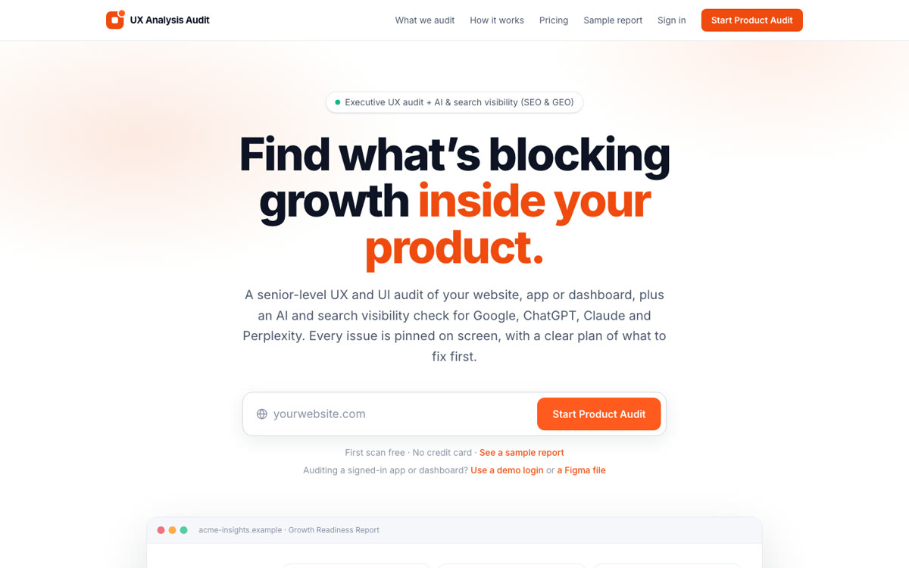
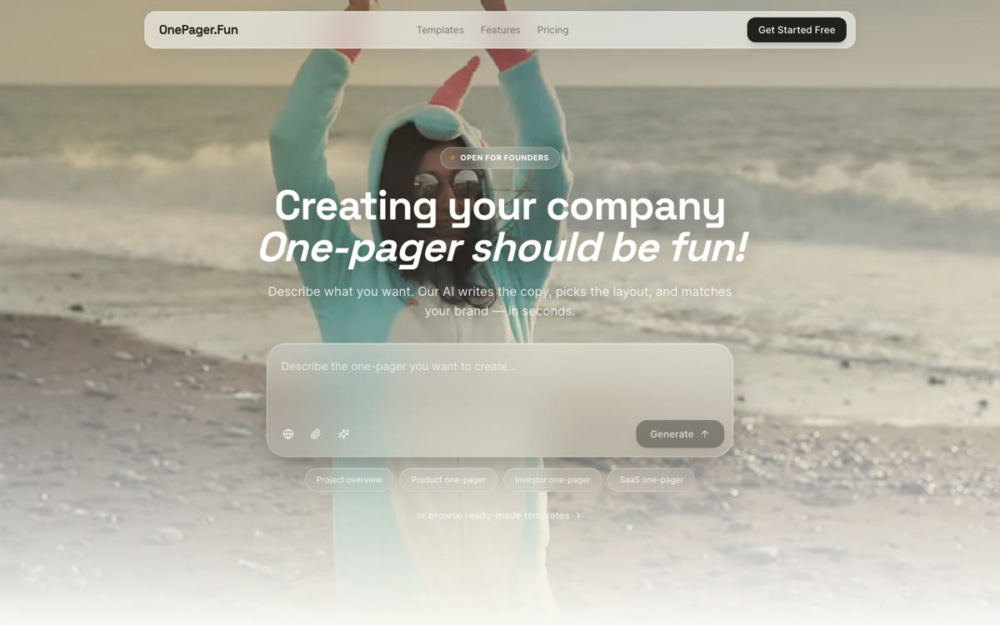
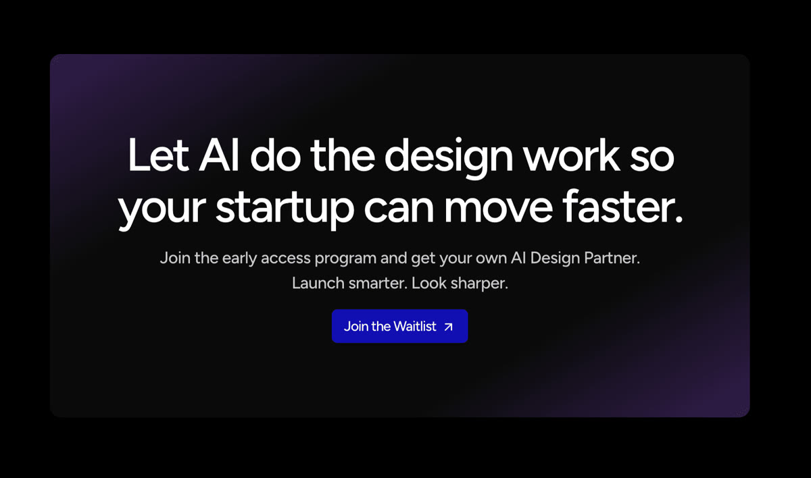
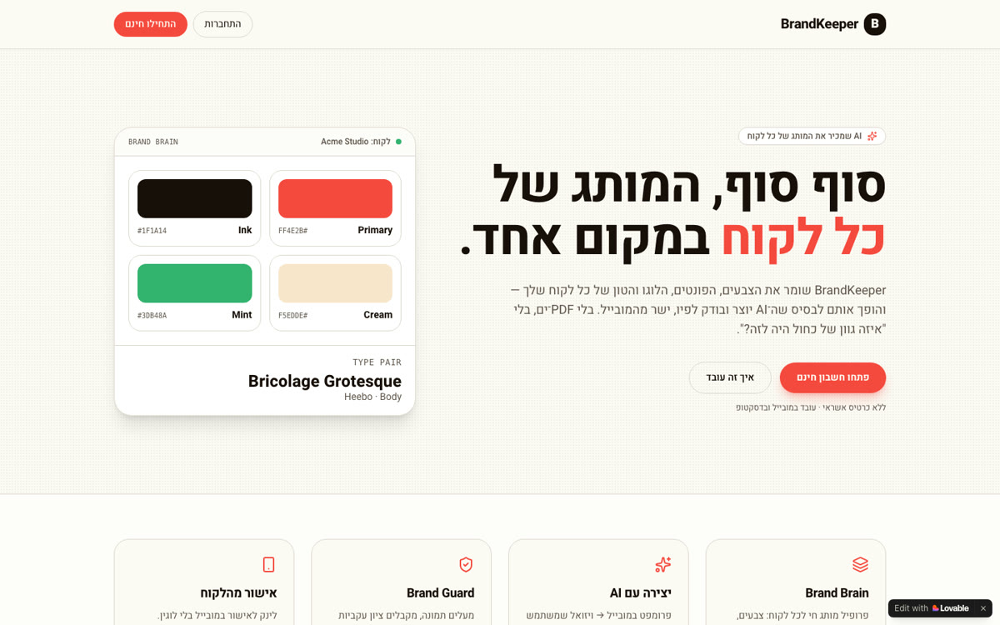
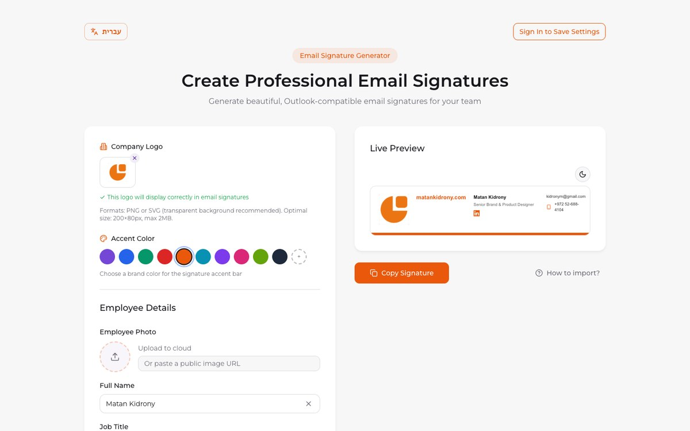

Side projects
AI tools and products I design and build, try them yourself and tell me what you think!
Side projects
Things I build for funLogoMotion
Your logo, in motion. Upload it, pick a format, and get a logo reveal, a social reel, a brand film or live brand guidelines.
Visit site
UX Analysis Audit
Senior-level UX audits for SaaS products, with annotated screens, an AI and search visibility check, and a clear plan of what to fix first.
Visit site
OnePager.Fun
Describe your company and AI writes the copy, picks the layout and matches your brand. A beautiful one-pager in minutes.
Visit site
BlinkLab
An AI design partner for startups: DesignOps automation built by a real designer, not a prompt. Fast, effortless and on brand.
Visit site
BrandKeeper
A living brand hub for freelance designers: every client's colors, fonts and logo in one place, with AI that creates on brand and checks consistency.
Visit site
Email Signature Studio
Build a polished, Outlook-compatible email signature in minutes. Add your logo and colour, watch it update live, and copy it straight into your mail client.
Visit site